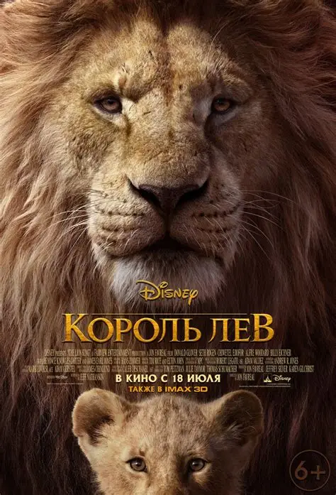

«Король Лев» — американский фильм режиссёра Джона Фавро, вышедший в прокат в июле 2019 года. Это ремейк знаменитого мультфильма студии Disney 1994 года, полностью созданный с помощью реалистичной компьютерной графики.
Фильм рассказывает историю львёнка Симбы, сына короля Муфасы. После гибели отца Симба уходит из родных земель, но, повзрослев, возвращается, чтобы занять своё место короля.
Муфасу, как и в мультфильме 1994 года, озвучил актёр Джеймс Эрл Джонс.
Симбу озвучил Дональд Гловер, а Налу — певица Бейонсе.
При создании фильма съёмочная группа работала в виртуальной реальности, чтобы «снимать» сцены как в настоящей саванне.